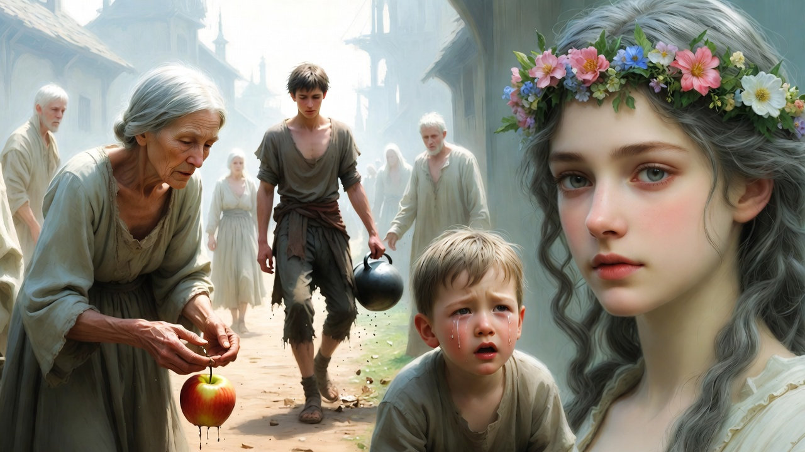
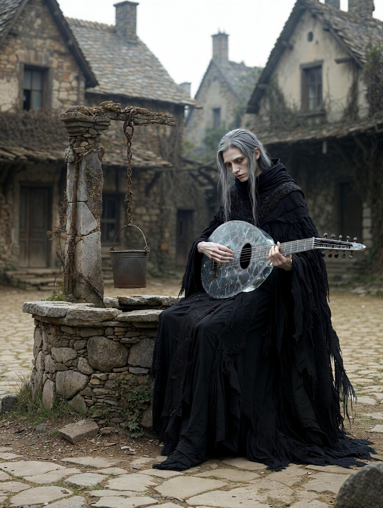
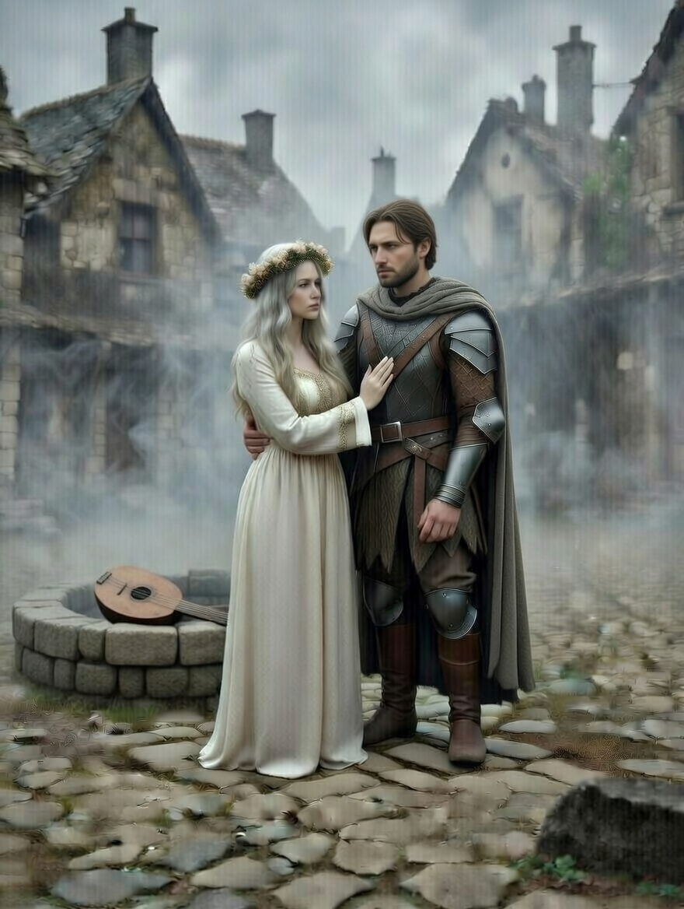
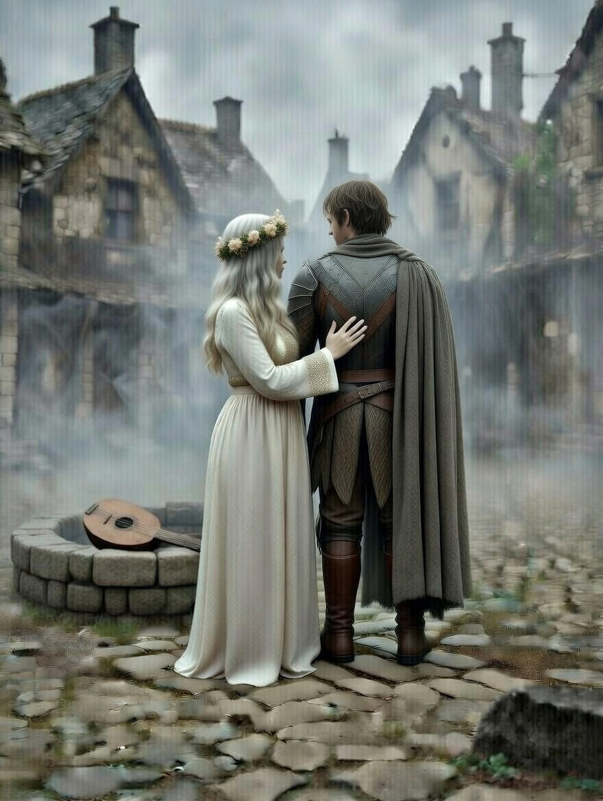
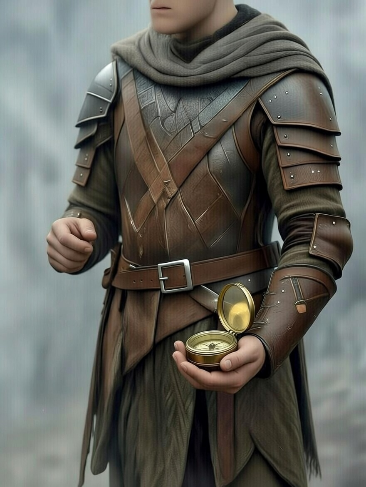

Ajánlom egy kedves barátomnak, aki keresi a pillanatban rejlő örökkévalóságot, és mer hinni a szív órájának szavában.
Az iránytű makacsul a Felejtés Hegye felé húzta Alerion kezét. A régi, ezüsttel bevont eszköz, amit még a Krónikás hagyott rá, soha nem hazudott – de most, a hegy lábánál, mintha élő dologként lüktetett volna a tenyerében, mintha könyörögne, hogy kövessék végre a hívását. Alerion szíve hevesen vert, nem csak a fáradtságtól, hanem attól a furcsa, megmagyarázhatatlan vonzódástól, amit a hegy sugárzott: egyfajta nosztalgikus űrt, mintha a világ összes elfelejtett emléke ott rejtőzne a ködben. Mellette Honóra lépkedett, arca sápadt, szemei pedig – amelyekben általában vidám szikrák táncoltak – most komoran fürkészték a szürke sziklákat. A levegő egyre hidegebb lett, tele keserű, porlepte illattal, mintha a hegy önmaga porladna szét a talpuk alatt.
Ahogy kapaszkodtak felfelé a meredek, szürke sziklákon, a világ egyre halkabb lett. Először a szél zúgása szűnt meg, ami eddig vidáman cibálta a köpenyüket, és hozta magával a távoli madarak kiáltását. Alerion még megpróbált fülelni: talán egy sólyom rikoltását, vagy a fenyők susogását, de semmi. Csak a saját lépteik koppanása visszhangzott a fülében, egyre gyengébben, mintha a hegy falai nyelnék el őket. Majd a kavicsok koccanása a lábuk alatt. Egyetlen kis kőgurulástól kezdve, amit Alerion véletlenül rugdosott meg, a zajok mintha vattába csomagolva értek volna a füléhez – tompán, távolról, majd végül egyáltalán nem. Honóra meg-megbotlott a laza talajon, kezével kitapogatva a kapaszkodókat, de még a körmeinek kaparászása a kősziklán sem adott ki hangot. „Ez nem természetes csend – mormolta magának Alerion, de a szavai olyanok voltak, mint a füst: szétterültek, majd eltűntek. Honóra bólintott, szája mozgott, de a szemei elárulták a rettegést: ő is érezte, hogy valami mélyebb, gonoszabb erőt szívja magába a világot körülöttük.
Mire elérték a hegytetőn fekvő falut, a csend olyan sűrűvé vált, mint a vatta, ami fojtogatja a torkot. A falu maga, amit a térképeken csak „Szavak Síkja”-ként jelöltek, olyan volt, mint egy elfeledett festmény: ködös körvonalak, halvány épületek, amelyekből a tetők félrecsúsztak, mintha a csend súlyától roskadoztak volna. A házak falai repedezettek, ajtajaik résnyire nyitva, de senki sem lépett ki belőlük sietve, senki sem kiabált üdvözletre. Alerion megállt egy pillanatra, hogy levegőt vegyen – de még a mellkasának emelkedése sem adott ki zörejt. A csend nem csak a füleiket támadta meg; a bőrét is nyomta, mintha láthatatlan ujjak szorítanák össze a torkát, elfojtva minden lélegzetvételt.
A faluban emberek jártak-keltek, de olyanok voltak, mint az árnyékok. Lassú, céltalan mozdulatokkal vándoroltak az utcákon, arcukon üres kifejezéssel, mintha a gondolataik is elillantak volna. Egy öregasszony görnyedten hajolt le egy eldobott almáért, ujjai reszketve tapogatták a földet, de amikor felemelte, a gyümölcsből csak a lé csorgott ki némán, foltot hagyva a ruháján. Ha valaki elejtett egy korsót, az némán tört össze a földön. Alerion maga látta: egy fiatalember, aki talán a kút mellett dolgozott, megbotlott a saját lábában, és a cserépedény a kövezett útra zuhant. A darabok szétszóródtak, csillogva a gyér napfényben, de semmilyen ropogás, semmilyen csörömpölés nem kísérte a zuhanást – csak a por lassú kavargása, mint egy néma tánc. Ha egy gyermek sírásra nyitotta a száját, csak a tátongó üresség látszott, hang nem jött ki rajta. Egy kisfiú, talán négy-öt éves, rohant oda hozzájuk, karját lengetve, mintha segítséget kérne – de a szája kitátva maradt, szemei könnyekkel telték meg, mégis csak a csend sikoltott helyette. Honóra ösztönösen lehajolt hozzá, keze a gyermek vállára siklott, de a kisfiú csak bámult rá, mozdulatlanul, mintha a érintés is elveszett volna a nagy ürességben.

– Itt a csend nem hiány, hanem lopás – próbálta mondani Honóra, de a saját hangját ő sem hallotta. A szavai, amik eddig fényként vagy illatként jelentek meg, most egyszerűen megsemmisültek a levegőben. Alerion figyelte, ahogy Honóra ajkai mozognak – a szokásos, dallamos mozdulatokkal, amelyekkel mindig mesélt a régi legendákról –, de semmi nem történt. Nincs ragyogó szikra, ami a szavait kísérte volna, nincs édes, virágos illat, ami betöltötte volna a levegőt. Csak a semmi. Honóra keze a torkához kapott, szemei elkerekedtek a döbbenettől, majd lassan lecsúszott a mellkasára, ahol a szíve hevesen kalapált – azt legalább érezte. Alerion megfogta a kezét, szorosan, próbálva átadni a saját melegét, de még ez a gesztus is néma maradt. „Mi történik itt? – formálta a szavakat szájával, hátha Honóra kitalálja a szándékát. Ő bólintott, de a tekintetében már ott bujkált a pánik árnyéka: ha a szavak ellopódnak, mi marad belőlük? Csak árnyak, akik elvesztették a nevüket.
A falu főterén, egy kiszáradt kút káváján ült a Néma Zenész. A tér maga kör alakú volt, körülölelve omladozó kőházakkal, közepén a kúttal, amelynek peremén moha és por rétegződött, mintha évek óta nem nyúltak volna hozzá. A zenész alakja szinte beleolvadt a tájba: magas, sovány férfi, fekete köpenye rongyossá foszlott az évek alatt, arca beesett, szemei mélyen ülők, mégis élesek, mint a sasé. Haja hosszú, ezüstszürke, a vállára omlott, és ujjai – hosszúak, csontosak – szinte táncoltak a levegőn. Egy különös, ezüstből készült lanton játszott, de a húrok nem adtak ki hangot. A hangszer maga olyan volt, mint egy álomból kovácsolt mű: vékony, íves test, amelynek felületén finom, csillogó erezet futott végig, mintha erek lüktetnének benne. A húrok átlátszóak voltak, szinte láthatatlanok, de amikor a zenész megpengette őket – nem valódi pengetéssel, hanem mintha a levegőt simogatná –, a lant teste megremegett, finoman, szinte észrevehetetlenül. A zenész ujjai gyorsan mozogtak, és ahogy „játszott”, látható volt, ahogy a levegőből apró, fénylő buborékokat szív magába a hangszer. Azok a buborékok a falusiak ellopott szavai voltak. Minden egyes mozdulattal egy-egy buborék úszott be a lant testébe: egyesek aprók, gyöngyházfényűek, talán egy sóhaj vagy egy felejtett név; mások nagyobbak, aranylóan csillogók, amelyekben Alerion szinte látta a szavak árnyékát – „szeretem”, „segíts”, „emlékszem”. A zenész szemei lehunyva maradtak, arca extatikus kifejezést öltött, mintha a lopás maga lenne a legnagyobb zene, amit valaha hallott. Alerion közelebb lépett, szíve hevesen vert a csendben, és érezte, ahogy a saját szavai – azok, amiket még ki sem mondott – kezdik elhagyni a torkát, vonzódva a hangszer felé. Honóra megragadta a karját, szemeiben könyörgés: „Ne hagyd, hogy elvegye őket!” De a csendben még ez a figyelmeztetés is csak egy újabb buborékot ígért a lantnak.

Alerion és Honóra odaléptek hozzá. A lépteik némák voltak a porlepte kövön, mintha a csend maga emelné őket a földről, de a levegő mégis megremegett a jelenlétüktől – egy halvány remegéssel, amit csak ők érezhettek a bőrükön. A Néma Zenész felemelte a fejét, szemei – sötét, feneketlen kútak – végigsimították őket, mint két hideg penge. Rájuk nézett, és elmosolyodott – egy gúnyos, néma mosollyal, amelyben nem volt vidámság, csak a csend diadala, a szavak feletti uralom. Az ajkai csak enyhe ívet kaptak, de a tekintetében ott csillogott a megvetés, mintha két idegen, ostoba vándor volna, akik belebotlottak a saját csapdájukba. Alerion hátán végigfutott a hideg, a kardja markolata hirtelen túl nehéznek tűnt a derekán, hasztalan fegyver ebben a némaság birodalmában.
Felemelte a lantját, és egy hirtelen mozdulattal Alerion felé mutatott. A hangszer megcsillant a gyér fényben, mintha élő dologként ébredezne, erezetei lüktetve a felszín alatt. A zenész ujjaival egy láthatatlan húrt pengetett meg, és ekkor történt: a levegő megvastagodott Alerion körül, mint egy láthatatlan háló, ami szorosan fonódik a torkára. A lovag érezte, ahogy a torkában megfagy a levegő: a neve, a emlékei, a szerelmi vallomásai mind a lantba vándoroltak. Először csak egy kaparászás, mintha tollas szárnyak vergődnének a mellkasában, aztán egy üresség, ami mindent elnyelt. „Alerion... – próbálta megformálni a nevét, de a szó elillant, mielőtt ajkára ért volna, egy apró, ezüst buborékká válva, ami lassan úszott a lant felé. Követették az emlékek: a gyermekkora nevetései a folyóparton, a csaták moraja, ahol a nevét kiáltozva hívták a bajtársak, és Honóra felé suttogott vallomások, azok a puha, éjszakai szavak, amelyekben a szerelme teljes egészében benne volt. Mind-mind kicsúszott belőle, mint homok a markából, és a buborékok sorra szívódtak be a hangszer testébe, ahol finoman megremegtek, majd eltűntek. Alerion térdre roskadt, keze a torkához kapott, de már nem volt mit fogni – csak a csontjai koppanását érezte a csendben, és a szemében a fény halványuló árnyékát.
Honóra látta, hogy Alerion szemeiben kialszik a fény, ahogy a szavai elhagyják. A tündér szíve összeszorult, arca elsápadt a rémülettől, de nem kiáltott fel – tudta, hogy az csak újabb táplálékot adna a zenésznek. Ehelyett a szemei égtek, kékes lánggal, amit a régi erdőkből hozott magával, ahol a szavak még dalok voltak, nem rabok. A tündér tudta, hogy itt a kard és a puszta ész kevés. Ha a szavakat ellopták, egy új nyelvet kell teremteni. Nem acélpengével, nem logika szálával, hanem valami mélyebbel, ami a csontokban lakik, a vérben lüktet. Körbenézve a falu árnyékain – a néma arcokon, ahol a fájdalom csak a szemekben csillogott –, érezte a súlyát ennek a tudásnak: a csend nem csak lopás volt, hanem átok, ami a lelket fosztja meg a horgonyától. De Honóra nem volt ember; ő a szél lánya volt, aki a viharokban született, és tudta, hogy a viharok sosem maradnak némák.
Emlékezett a Zavaros Érzékek Mezejére. Ott megtanulták, hogy az érzékek felcserélhetők. A mező az a hely volt, ahol a fák kacagása színné vált, a folyó íze dallá, és a érintés illattá szövődött – egy ősi tanítás, amit a tündérek csak krízisben idéztek fel, amikor a világ határai elmosódnak. Honóra mély levegőt vett, érezte a csend ízét a nyelvén, keserű, mint a hamu, de ez csak erőt adott neki. Odalépett Alerionhoz, és nem próbált beszélni. Ehelyett a kezét a férfi szívére tette, a másikat pedig a sajátjára. Az ujjaiból meleg áradt, finom, mint a hajnal első sugarai, és Alerion teste megrezzent a érintés alatt – egy halvány remegés, ami a csendben szinte mennydörgésnek tűnt. Lehunyta a szemét, és elkezdte dobogni a ritmust. Dob-dob. Dob-dob. Először lassan, mint egy távoli vihar előjele, aztán egyre gyorsabban, szinkronban a saját szívével. A ritmus átterjedt Alerion mellkasára, ahol a dobogás visszhangzott, nem hangként, hanem lüktetésként: a vér útján, a csontokon át, egy új nyelv születése. Honóra elképzelte, ahogy a szívverés színné válik – mélyvörös hullámokká, amelyek a bőrük alatt hömpölyögnek –, és illattá, édes, földes aromává, ami betölti a teret körülöttük. Alerion szemei kitágultak, a ürességben valami feldereng: nem szavak, hanem érzések, nyers és eleven.

A Néma Zenész elmélyülten figyelte őket. A mosolya megfagyott az arcán, szemei összeszűkültek, mintha először látna ellenfelet a saját játékában. Ujjai megálltak a lanten, a buborékok most tétován lebegtek a levegőben, vonzódva a ritmushoz, de képtelenek behatolni. Próbálta elkapni ezt a „hangot” is, de a szívverés nem szó volt, amit be lehet börtönözni egy lantba. Az élet lüktetése volt. Nem fogható, nem láthatatlan szálakon köthető; ez a ritmus a világ magja, ami a hegyet is megremegteti, ha elég erős. A zenész előrehajolt, a hangszerét megemelve, mintha egy láthatatlan hálót font volna, de a dobogás kitért előle, mint a víz a kő elől. A falusiak lassan összegyűltek a tér szélén, árnyékaik megnyúltak a ködben, és arcukon – először azóta, hogy Alerion és Honóra érkeztek – felderengett valami: egy halvány remény, egy belső visszhang, ami a saját szívükben ébredt fel. A csend kezdett repedezni, nem hanggal, hanem azzal a finom rezgéssel, ami a közelgő vihart jelzi.
Alerion megértette. A ritmus, ami kezdetben csak egy halvány visszhang volt a mellkasában, most már teljes erővel áradt szét benne, mint egy elfojtott folyó, ami áttöri a gátat. Honóra tenyere alatt érezte a saját szívét, de már nem külön-külön: a két dobogás összefonódott, egy közös hullámzássá válva, ami a bőrükön keresztül terjedt szét, remegtetve a levegőt körülöttük. Alerion szemei kitágultak, a ürességben, amit a szavak távozása hagyott maga után, most valami új született – nem hang, hanem érzés, nyers és eleven, ami a csontjaiban vibrált. Lassan felemelte a karját, és átölelte Honórát, karjai erős, védelmező mozdulattal fonódtak köré, mintha a világ összes csendjét akarná elűzni ezzel a érintéssel. A homlokukat egymáshoz szorították. A bőrük érintkezése meleg volt, szinte forró a csend hidegében, és ebben a pillanatban a világ összeszűkült kettőjükre: a Néma Zenész, a falu árnyékai, a hegy szürke sziklái mind eltűntek, csak ez a közös pont maradt, ahol a lelkük találkozott. A csendben, ahol a szavak halottak voltak, a két test közös ritmusa elkezdett felerősödni. Ez volt a Néma Logika: ha a hangot elvették, a rezgést kell használni. Nem a levegőt vibráltatni, ami ellopható, hanem a testet, a vért, az életet magát – azt a nyelvet, amit semmilyen lant nem foghat meg, mert az a világ szövete, a hegy gyökere, a csillagok tánca.
A közös lüktetés olyan erőssé vált, hogy a Néma Zenész ezüst lantja rezegni kezdett. A hangszer teste megremegtet a finom, ezüstös erezeteiben, mintha belülről ébredne egy vihar: a buborékok, azok a rabolt szavak, most már nem csillogtak békésen, hanem ide-oda pattogtak a felszín alatt, ütközve, feszülve. A zenész szemei kitágultak a döbbenettől, ujjai görcsösen markolták a nyakat, próbálva visszatartani a dallamot, de a ritmus túl erős volt – átszökkent a levegőn, mint egy láthatatlan hullám, ami a kútkávát is megremegtette, finom porfelhőt kavarva fel a peremről. A húrok megfeszültek, majd egyetlen, hatalmas, láthatatlan pendüléssel elpattantak. Nem harsány szakadással, hanem egy mély, belső reccsenéssel, amit Alerion és Honóra a mellkasukban éreztek, mint egy utolsó, kétségbeesett sóhajt. A lant teste megrepedt, finom repedések futottak végig az ezüst felületen, és onnan áradt szét a fény: ezüstös szilánkokat szórt szét, amelyek a levegőben táncolva kezdtek el olvadni, mint hópihék a tűzben.
Ebben a pillanatban a falura rászakadt a hangok zűrzavara. Nem fokozatosan, hanem hirtelen, mint egy elfojtott vihar, ami egyszerre szabadul el: a levegő megtelt zajokkal, amelyek eddig foglyok voltak, most pedig szabadon ömlöttek vissza. A korsók csörömpölése, a gyermekek sírása, a szél üvöltése és az emberek elfojtott kiáltásai egyszerre tértek vissza. Egy közeli ház ajtaján becsapódó deszka recsegése, egy öregasszony nevetése, ami rekedten tört elő a torkából, a kisfiú – az a szegény, némán tátogó gyermek – éles, megkönnyebbült visítása, ami végre áthatotta a csendet. A szél újra zúgott a tetők felett, kavicsokat sodort az utcán, és a falusiak torkából szakadtak elő a szavak: „Végre!”, „Hazaértem!”, „Ki vagyok én?” – kaotikus, de eleven keverék, ami betöltötte a teret, mint egy ünnepi lakoma után a nevetés. A fénylő buborékok kipukkantak, és visszaszálltak gazdáikhoz. Apró, csillogó gömbök robbantak szét a levegőben, finom ködöt hagyva hátra, és minden egyes pukkanásnál egy szó, egy emlék, egy sóhaj talált vissza a tulajdonosához: egy asszony kezéhez simult a „fiam” kiáltás, egy férfi ajkára kúszott a felejtett név, és Alerion torkában megérezte a saját szavait, meleg áradatként térve vissza, tele élettel és súllyal.
A Zenész alakja köddé vált, csak a törött lant maradt a kúton. A magas, sovány figura elmosódott a szemük előtt, mintha a csend, amit szolgált, most magába nyelte volna: először a körvonala halványult el, aztán a szemei utolsó, gúnyos csillogása, végül a köpeny rongyai is semmivé váltak, szétfoszlanak a szélben, mint hamu. A lant, most már csak egy töredezett ezüst korong, hevert a kőkáván, húr nélkül, üresen – tanúja annak a csatának, amit elveszített. Alerion és Honóra még mindig összefonódva álltak, a ritmus lassan lecsillapodott bennük, de a melegük megmaradt, egy csendes utóhangként.
– Alerion... – suttogta Honóra, és most a saját hangja a legszebb zene volt, amit valaha hallott. A szó puha volt, reszkető, de tele élettel, mint egy első tavaszi madárcsiripelés a hóolvadás után. A hangja visszhangzott a térben, nem elveszve, hanem erősödve, és Honóra érezte, ahogy a könnyei kicsordulnak, meleg csíkokként az arcán, de ezúttal nem fájdalom, hanem megkönnyebbülés miatt.
– Itt vagyok – felelte a lovag, és mélyen beszívta a hegyi levegőt, ami most már nem volt fojtogató. A levegő friss volt, tele fenyőillattal és távoli patakok csobogásával, mintha a hegy maga is fellélegzett volna. A szavai mélyek voltak, erős alapjukkal, mint a régi eskük, amiket még a csend előtt tettek. – Azt hitte, ha elviszi a szavainkat, elvisz minket is. De elfelejtette, hogy a szavak csak a hírnökei annak, ami mélyen belül van. A szívünk, a vérünk, a közös ritmusunk – ezek a dolgok, amik nem lopódnak el, mert azok vagyunk mi magunk. Alerion keze végigsimított Honóra hátán, gyengéden, de határozottan, és a érintésükben ott volt a csata utóíze: a győzelem nem a zenész bukásában, hanem ebben a visszatérőben, ebben a újrakezdésben rejlett.

A falusiak köréjük gyűltek, de nem ünnepeltek zajosan. Inkább csak csendesen beszélgettek, ízlelgetve minden egyes szót, mintha drágakő lenne. Lassú, óvatos mozdulatokkal közelítettek, arcukon a döbbenet és a hála keveréke: egy öregember bólintott Alerionnak, szája mozgott lassan, „Köszönöm” szót formálva, mintha attól félne, hogy újra elillan; a kisfiú anyja karjába zárta a gyermeket, és halkan dúdolt neki, a dallam most már igazi, nem csak belső. A tér megtelt halk mormolással, nevetéssel, de nem kaotikusan – inkább, mint egy imádság, ahol minden szó súlya megvan. Megtanulták, hogy a beszéd felelősség. Nem csak hangok, hanem hidak, amik összekötik őket, és most, miután elvesztették, újraértékelték: egy feleség férjéhez hajolt, és csak ennyit mondott: „Szeretlek”, de ebben a szóban ott volt minden elveszett év; egy fiatalember a barátjához fordult, és megosztotta a nevét, mintha először tenné. A falu, ami eddig árnyakból állt, most élővé vált, de bölcsebb, óvatosabb, a csend tanításával megvértezve.
Alerion elővette az iránytűt. A tűje még mindig hiányzott, de a korongja most egy gyenge, aranyos fénnyel világított a Felejtés Hegye túlsó oldala felé. Az ezüstfelület melegedett a tenyerében, mintha a belső ritmusuk töltötte volna fel, és a fény nem csak jelzett, hanem hívott: egy új utat, ahol a szavak nem lopás, hanem ajándékok lesznek. Honóra mellé lépett, kezét a vállára tette, és együtt nézték, ahogy a fény táncol a ködben, a hegy túloldala felé vezetve őket – a kaland következő fejezetébe, ahol a csend már csak emlék, de a tanulság örök.
